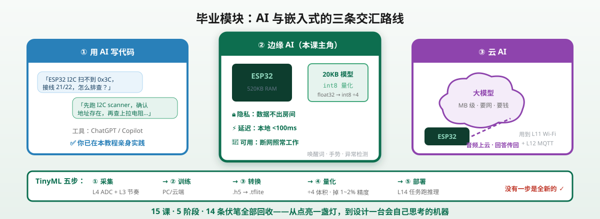

阶段五 · 进阶专家 ｜ 难度：★★★☆☆（概念课，代码可选）｜ 预计用时：45–60 分钟
本课材料：无强制硬件。想跑真推理可用 ESP32 + INMP441 麦克风模块（可选）或直接用 Wokwi/在线演示 性质：可选毕业模块——本课不引入新语法，而是把你 14 课攒下的能力接上 AI 时代，并给出毕业后的进阶地图

你将看到三条 AI 与嵌入式的交汇路线：①用 AI 写代码（你在本教程里已经亲身实践的对话式开发）②让 AI 跑在板子上（边缘 AI：语音唤醒、手势识别、异常检测）③让设备开口说话（云端大模型 + ESP32 的麦克风阵列）。
最后，你会拿到毕业后的进阶地图——14 课点的灯，这一课把火交到你手里。
本课学习目标（完成后你将拥有）：
先说破一个事实：这套教程本身就是"AI 辅助开发"的产物——你（和作者）一边对话一边把 15 课做出来，代码、报错、接线疑问都在对话里解决。这就是 AI 时代的开发第一技能：会提问、会验证、会把 AI 的输出变成能跑的东西。
三条路线先分清（面试和选型都用得上）：
路线① 用 AI 写代码 路线② 边缘 AI（本课主角） 路线③ 云 AI
PC 上的 LLM 帮你写/改代码 模型跑在 ESP32 芯片内部 模型跑在云端服务器
工具：ChatGPT/Copilot 例：语音"小爱同学"唤醒词 例：ESP32 把音频传云，云上的
你已实践 ✓（本教程） 例：设备异常震动报警 大模型回答，再传回设备
特点：离线、低延迟、隐私 特点：能力强、但要网要钱
💡 路线②为什么适合 ESP32？ 因为隐私（数据不出房间）、延迟（本地 <100ms）、可用性（断网照常工作）——这三点恰好是很多 AI 功能的硬需求。你的 14 课能力全部用得上：I2C 读传感器（L8）、ADC 采声音（L4）、millis 采样节奏（L3/L10）、模型文件放 Flash（L14 分区表）——AI 不是新科目，是把你已有的管道接上新水源。
TinyML（Tiny Machine Learning） = 把机器学习模型塞进微控制器。完整流水线五步：
① 采集数据 ② 训练模型 ③ 转换格式 ④ 量化压缩 ⑤ 部署推理
ESP32 录 1000 个 PC/云上用 .h5 → .tflite float32 → int8 固件里跑
"叮"和"咚"样本 TensorFlow/Keras (TensorFlow Lite 模型缩小 4 倍 xTaskCreate
（L4 ADC 采样用上） 教它分类 Micro 的输入格式) 精度掉 1~2% 任务读麦克风推理
三个你必须懂的关键点：
① 训练不在 ESP32 上，在 PC/云上——ESP32 只负责推理（inference），即"把现成的模型跑一遍"。就像你手机上的"人脸识别"，训练是苹果/谷歌在数据中心做的，手机只执行。
② 量化（Quantization）是 MCU AI 的命门：模型参数从 32 位浮点压成 8 位整数——体积 ÷4，速度 ×3，精度只掉 1~2%。没有量化，几百 KB 的模型根本进不了 ESP32 的 520KB SRAM。
③ 模型小到什么程度？ 能跑在 ESP32 上的典型模型：关键词唤醒（~20KB）、手势分类（~50KB）、异常振动检测（~30KB）、简单图像分类（~100KB，CIFAR-10 级别）。跑不了的：ChatGPT 级大模型、高清图像识别——那些属于路线③（云 AI）。
| 任务 | 模型大小 | 能跑？ | 用到本教程哪些课 |
|---|---|---|---|
| 关键词唤醒（"你好小智"） | 15–30KB | ✅ 很流畅 | L4 ADC、L3 采样节奏、L14 任务 |
| 震动/声音异常检测 | 20–50KB | ✅ 流畅 | L8 传感器、L10 非阻塞 |
| 手势分类（加速度计） | 30–60KB | ✅ 流畅 | L8 MPU6050、L14 任务 |
| 简单图像分类（32×32） | ~100KB | ⚠️ 勉强（要 PSRAM 板） | L9 SPI 摄像头接口 |
| 实时语音识别（整句） | MB 级 | ❌ 上传云端（路线③） | L11 Wi-Fi、L12 MQTT |
本教程你已经体验过对话式开发，这里把它方法论化——毕业前最后一课的"心法"：
✅ 该做的：
❌ 别做的：
🔑 一句话心法：把 AI 当"读过所有文档但没有你板子的同事"——它快、它博学，但接线对不对、现象真不真，只有你手上的硬件说了算。
我要用 ESP32 读电位器控制 LED 亮度，接线是电位器中脚接 GPIO25，
用 analogRead(25)，同时程序要开 Wi-Fi 连 MQTT。请写代码。
跑不通也没关系：这一步需要 IDF 与模型工具链（L14 的延伸），它的价值在于你知道"路线存在、步骤清晰、我以后能走"。
五步里没有一步是「全新的」——全是 14 课管道的重新组装。AI 不是新科目，是把你已有的管道接上新水源。
上图是 TinyML 五步流水线的交互演示：点每一步看它做什么、用到本教程哪一课的能力——你会发现没有一步是"全新的"，全是 14 课管道的重新组装。
全部打勾 → 15 课全部完成。🎉 毕业快乐——但学习才刚开始。
毕业设计（三选一，用你学过的全部能力）：
交付要求：代码（PlatformIO 工程，L13 标准结构）+ 一段 3 分钟演示视频 + 一页架构说明（画出数据从传感器到最终响应的完整链路）。做完这个，你从"跟着教程走"变成了"自己能造"。
| 方向 | 学什么 | 关键词 | 适合你如果…… |
|---|---|---|---|
| 产品开发工程师 | 深挖 IDF/FreeRTOS、功耗优化、OTA、安全（Flash 加密 / Secure Boot）、量产测试 | ESP-IDF、低功耗、量产 | 喜欢把东西做出来卖 |
| 物联网系统架构 | MQTT 深水区（QoS/桥接）、时序数据库、边缘网关、云平台（AWS IoT/Azure） | 系统集成、数据 | 喜欢"连接一切"、画架构图 |
| 边缘 AI 工程师 | TensorFlow Lite Micro、模型量化剪枝、ESP-DL、语音/传感器融合 | TinyML、模型部署 | 喜欢"让小芯片变聪明" |
通用基本功（无论选哪条）：C 语言深入（指针/内存）、Git 协作、读英文数据手册（Datasheet）、示波器/逻辑分析仪使用——这四样，是 15 课之外真正值钱的东西。
推荐资源：乐鑫官方文档（docs.espressif.com，中英双语，最权威）→ ESP-IDF 编程指南；Arduino 官方参考；TensorFlow Lite Micro 文档；以及你自己的第 1–14 课笔记——回头看，它们就是你的第一本技术书。
| 现象 / 报错关键词 | 原因 | 解决办法 |
|---|---|---|
| AI 给的代码引脚号不对 | AI 没有你的板子，凭记忆写 | 用第 6 课三连问自查；以引脚表为准 |
AI 写的 analogRead(25) + Wi-Fi |
ADC2 冲突它没意识到（除非你提示） | 本课路线 A 就是练这个：主动审它 |
照抄 AI 代码出现 undefined reference |
库没装 / 框架不匹配（L13 报错表同款） | lib_deps 锁版本；对齐 framework |
| 模型转换报格式错误 | .h5 没转 .tflite / 没用 Micro 版转换器 | 用 tensorflow.lite.micro 转换脚本 |
| 推理时内存不足（Guru Meditation） | 模型太大 / 没量化 / 没开 PSRAM | int8 量化；换小模型；用 ESP32-S3 |
| 推理结果全 0 或乱跳 | 输入预处理和训练时不一致 | 对照训练代码的归一化/窗口参数 |
| 训练精度很高，板上很差 | 数据分布不同 / 量化损失 | 采集真实板上数据再训练；校准量化 |
| AI 改 A 处坏 B 处 | 让它"重写整个项目"丢了结构 | 改哪里说哪里（本课心法） |
第 1 课： 你第一次让电流听你的话
第 3 课： 你扔掉了 delay，学会让程序"活着等"
第 6 课： 你把引脚的脾气一次算清
第 10 课： 你让三条时间线并行，拆掉埋了 8 课的雷
第 12 课： 你的数据跳出了房间，到达世界的另一端
第 14 课： 你掀开盖子，看见了地基
第 15 课： 你接上了 AI 时代，并拿到了自己的地图
15 课、5 个阶段、30+ 个引脚真相、20+ 个交互动画、14 条伏笔全部回收——但真正重要的不是这些数字，而是你现在遇到一块新板子、一个新传感器、一段别人的代码时，知道从哪里下手、知道坑在哪、知道怎么验证。
从点亮一盏灯，到设计一台会自己思考的机器——这条路你已经走完了第一段。剩下的，去造吧。 🚀
本课程系列：从点亮一盏灯，到设计一台会自己思考的机器。全 15 课完。